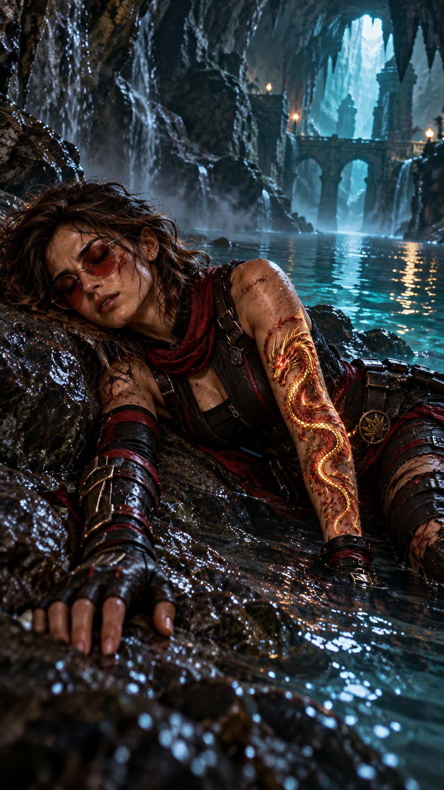
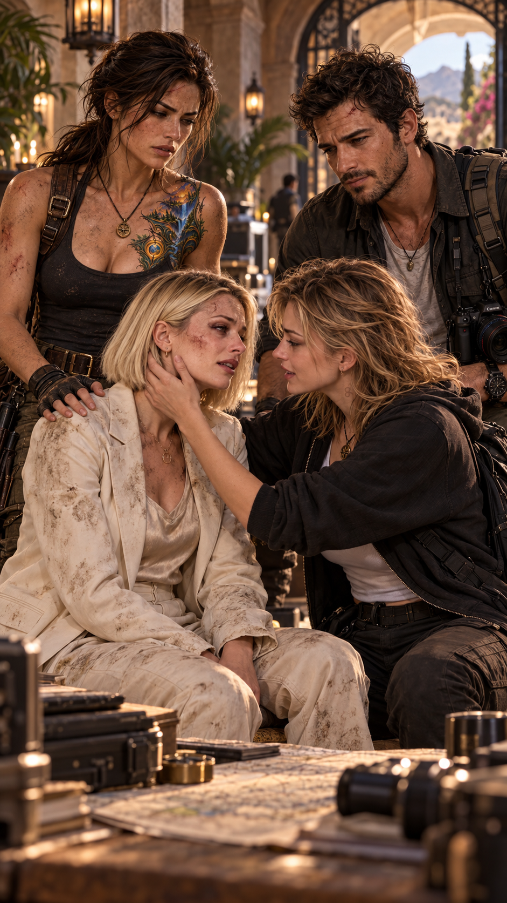
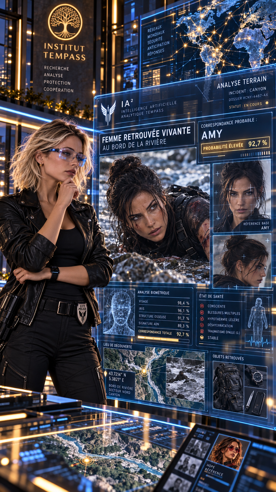
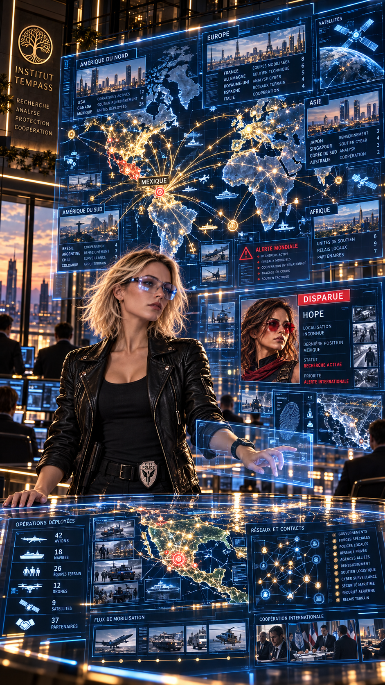

Betty reste figée.
Longtemps.
Trop longtemps.
Elle fixe la rivière au fond du canyon.
Espérant apercevoir un mouvement.
Une silhouette.
N’importe quoi.
Mais rien.
Betty ferme les yeux.
Une larme coule lentement le long de sa joue.
Lorsqu’elle les rouvre, quelque chose a changé.
Hope s’est sacrifiée pour elles.
Pour Anna.
Pour elle.
Betty refuse que ce sacrifice ait été inutile.
— Anna…
Elle se relève.
— Je dois retrouver Anna.
Betty marche pendant plusieurs heures.
Le réseau revient progressivement lorsqu’elle se rapproche d’une route secondaire.
Elle sort immédiatement son téléphone.
Un seul nom.
Root.
La communication s’établit presque instantanément.
— Betty ?
Root reconnaît immédiatement quelque chose dans sa respiration.
— Qu’est-ce qu’il s’est passé ?
— Anna.
— Elle est avec Max.
Betty ferme les yeux de soulagement.
— Elle va bien ?
— Oui.
— Où ?
— En sécurité.
Betty s’adosse à un arbre.
— Hope…
Root se fige.
— Quoi, Hope ?
Betty ne trouve pas les mots.
— Elle est tombée.
— Où ?
— Dans le canyon.
— Avec une autre femme.
— Amy, je crois.
Silence.
Puis Betty murmure :
— Je pense qu’elle est morte.
— Non.
Betty se fige.
— Root…
— Elle n’est pas morte.
— Tu ne sais même pas ce qui s’est passé.
— Je m’en fiche.
La voix de Root tremble légèrement.
— Elle est vivante.
Betty ferme les yeux.
— Comment tu peux en être aussi sûre ?
Root ne répond pas immédiatement.
— Je ne sais pas.
— Mais je le sais.
À plusieurs kilomètres de là, profondément sous la roche, l’eau poursuit sa course.
Hope ne sait plus depuis combien de temps elle est inconsciente.
Au moment de la chute, elle a activé sa bulle Crash au dernier instant.
Pas suffisamment tôt pour éviter l’impact.
Mais suffisamment pour en absorber une grande partie.
Lorsque leurs corps frappent l’eau, Hope et Amy sont brutalement séparées.
La bulle se disloque.
Le courant les emporte.
Amy reste entraînée vers le lit principal du cours d’eau.
Hope, elle, est happée par un bras secondaire.
Étroit.
Violent.
Invisible depuis la surface.
Son corps disparaît sous la montagne.
Le courant l’emporte dans l’obscurité.
Puis, progressivement, ralentit.
L’eau finit par la rejeter sur une petite plage.
Hope reste immobile.
Inconsciente.

Autour d’elle, une étrange grotte souterraine.
Une vasque profonde.
Une petite langue de sable aux reflets multicolores.
Curieusement tiède.
Très haut au-dessus d’elle, un mince puits de lumière traverse la roche.
À peine quelques rayons.
Mais suffisamment pour révéler quelque chose d’étrange.
Des reflets dans les parois.
Des formes.
Peut-être naturelles.
Peut-être pas.
Hope ne les voit pas.
Pas encore.

Quelques heures plus tard, Betty rejoint enfin Anna.
La jeune femme court immédiatement vers elle.
— Maman !
Betty la serre contre elle.
Très fort.
Trop fort.
Anna comprend aussitôt.
— Où est Hope ?
Betty ne répond pas.
Anna recule légèrement.
— Maman ?
Max baisse les yeux.
Root s’approche.
— Betty…
Betty regarde sa fille.
— Elle est tombée dans le canyon.
Anna pâlit.
— Non.
— Avec Amy.
— Non…
Betty lui reprend les mains.
— Elle nous a sauvées.
Anna secoue la tête.
— Elle n’est pas morte.
Betty la regarde.
— Tu n’en sais rien.
Anna répond, presque furieuse :
— Elle n’est pas morte.
Root tourne la tête vers elle.
Pendant une fraction de seconde, les deux femmes semblent ressentir exactement la même chose.
Betty regarde autour d’elle.
— Où sommes-nous ?
Root répond :
— Institut Tempass du Mexique.
Betty la regarde.
— Tu as aussi un institut ici ?
Root hausse les épaules.
— J’en ai plusieurs.
— Combien ?
— Assez.
Max sourit légèrement.
— Ne pose pas la question si tu ne veux pas être agacée.
Pendant ce temps, à plusieurs centaines de kilomètres, Lucy travaille seule avec IA2.
Elle ignore encore tout de la disparition d’Hope.
Les écrans devant elle affichent toujours les dossiers de la Caméléon.
Puis soudain :
une première alerte.
Puis une deuxième.
Puis dix.
Lucy se redresse.
— IA2 ?
— MOUVEMENTS INHABITUELS DÉTECTÉS.
Une carte apparaît.
Plusieurs trajets convergent vers le Mexique.
Avions privés.
Vols commerciaux.
Déplacements terrestres.
Réservations effectuées en urgence.
Lucy fronce les sourcils.
— Qui ?
Des profils apparaissent.
Pris séparément, rien de suffisamment extraordinaire.
Ensemble…
Lucy se rapproche.
— IA2.
— Compare leurs relations.
Plusieurs réseaux commencent à apparaître.
Sociétés écrans.
Associations.
Fondations.
Entreprises.
Anciens employeurs.
Voyages communs.
— Impossible…
Lucy agrandit la carte.
Tous ne vont pas au même endroit.
Mais beaucoup convergent vers le même pays.
Le Mexique.
Lucy murmure :
— Pris séparément, ce sont des voyages.
Elle observe toutes les lignes.
— Ensemble… c’est une mobilisation.
IA2 répond :
— PROBABILITÉ D’UNE COÏNCIDENCE GLOBALE : FAIBLE.
À l’Institut Tempass, les Sentinelles présentes commencent elles aussi à recevoir des messages.
Les visages changent.
Les déplacements s’accélèrent.
Root le remarque.
Max également.
Puis la grande porte s’ouvre.
Un homme apparaît.
Maître Lee.
Le silence tombe immédiatement.
Les Sentinelles présentes s’inclinent.
Root elle-même se redresse.
Max incline légèrement la tête.
Betty observe la scène, stupéfaite.
Maître Lee avance lentement.
Root va immédiatement vers lui.
— Elle est vivante.
Il la regarde.
— Je sais.
Root se fige.
— Vous aussi ?
— Oui.
— Comment ?
Il ne répond pas.
Root poursuit :
— Je ne pourrais pas l’expliquer.
— Mais je la sens.
Maître Lee acquiesce.
— Alors écoute ce que tu ressens.
Anna s’approche.
— Vous êtes Maître Lee ?
Il se tourne vers elle.
Un sourire apparaît sur son visage.
— Et toi, tu es Anna.
Elle acquiesce.
— Pourquoi tout le monde a l’air de paniquer ?
Personne ne répond immédiatement.
Anna regarde autour d’elle.
— Pourquoi faut-il absolument retrouver Hope ?
Maître Lee s’approche.
— Parce qu’elle ne protège pas seulement ta vie.
Anna fronce les sourcils.
— Qu’est-ce que ça veut dire ?
Lee pose doucement une main sur son épaule.
— Que certaines personnes commencent à comprendre ton importance avant toi-même.
— Quelle importance ?
— Celle que Hope devait justement t’aider à découvrir.
Anna reste silencieuse.
— Elle est morte ?
Lee secoue lentement la tête.
— Non.
— Comment vous le savez ?
— Parce que si son souffle s’était réellement éteint…
Il ferme brièvement les yeux.
— Certains d’entre nous le sauraient.
Anna comprend qu’il ne dira rien de plus.
Lee ajoute :
— Ta peur te dit qu’elle est morte.
— Essaie d’écouter autre chose.
Anna ferme les yeux.
Quelques secondes.
Puis plus longtemps.
Betty la regarde.
Anna inspire lentement.
Puis ouvre les yeux.
— Elle est vivante.
Betty reste figée.
Anna murmure :
— Je ne sais pas comment…
— Mais elle est vivante.
Lee sourit.
— Alors nous allons la retrouver.
Au même moment, Lucy entre brusquement dans l’institut.
Elle n’a même pas attendu qu’on lui indique correctement le chemin.
— Root !
Tout le monde se tourne.
Lucy ralentit en apercevant Maître Lee.
— Vous êtes qui ?
Lee ouvre la bouche.
Lucy lève une main.
— Non, finalement, peu importe. On fera les présentations après.
Root manque de sourire.
— Qu’est-ce qu’il se passe ?
Lucy active son écran.
— IA2 détecte des mouvements internationaux complètement anormaux.
Elle projette la carte.
— Des dizaines de personnes liées indirectement à plusieurs réseaux convergent vers le Mexique.
Max s’approche.
— Depuis quand ?
— Quelques heures.
Root regarde Lee.
Lucy remarque cet échange.
— Vous savez quelque chose.
Personne ne répond.
Lucy soupire.
— Génial. Encore un secret.

Max reçoit soudain une notification.
Son expression change.
— Attendez.
Il lit.
— Une femme a été retrouvée vivante sur une rive en aval du secteur de Tamul.
Betty se redresse.
— Hope ?
Max continue de lire.
— Les secours n’ont jamais pu la récupérer.
— Pourquoi ?
— Un groupe est arrivé avant eux et l’a emmenée.
Anna répond :
— Nous étions là-bas.
Lucy se tourne vers elle.
Anna poursuit :
— Avec Maman, Hope et Max.
— Une femme nous a attaqués.
Lucy regarde Betty.
Puis Max.
Puis Root.
— Quoi ?
Anna continue :
— Hope nous a sauvés.
— Elle a entraîné l’autre femme avec elle dans le canyon.
Lucy reste silencieuse.
— Et personne n’a pensé à m’appeler ?
Anna la regarde.
— Il n’y avait pas de réseau.
Lucy ouvre la bouche.
Puis la referme.
— D’accord.
Anna s’approche.
— Tata.
Lucy la regarde.
— Si la femme retrouvée est Hope, il faut la retrouver.
— Et si ce n’est pas Hope…
Anna marque une pause.
— C’est peut-être celle qui nous a attaqués.
Root termine :
— Amy.
Lucy se tourne brusquement.
— Amy ?
Root regarde Lee.
Puis Betty.
Betty acquiesce.
— Hope m’a donné son prénom.
Lucy ne bouge plus.
— La femme dont Hope pensait qu’elle pouvait correspondre au profil de la Caméléon ?
Root répond :
— Oui.
Silence.
Lucy regarde l’écran.
— Alors maintenant, on a enfin un nom.
Elle se tourne vers IA2.
— Cherche tout.
Puis elle ajoute :
— Mais aucune conclusion sans preuve.
Root sourit légèrement.
— Ça, c’est bien toi.
Lucy la fixe.
— Et toi, plus tard, tu m’expliqueras pourquoi tu savais tout ça.
— Avec plaisir.
— Je doute énormément de cette réponse.
IA2 travaille plusieurs minutes.
Puis une série de résultats apparaît.
Lucy analyse les données.
— La femme retrouvée en aval ne correspond probablement pas à Hope.
Anna pâlit.
— Tu en es sûre ?
— Non.
Lucy précise :
— Mais plusieurs indices concordent avec l’autre femme.
Root s’approche.
— Amy.
Lucy acquiesce.
95 % DE CONCORDANCE
sur les éléments disponibles.
Root inspire.
— Si Amy a survécu…
Elle regarde Anna.
— Hope aussi.
— Ce n’est pas une preuve, répond Lucy.
— Non.
Root serre les mâchoires.
— Mais c’est mieux que rien.

Lucy regarde la carte mondiale encore affichée.
Lucy regarde la carte mondiale encore affichée.
— Maintenant, expliquez-moi pourquoi la moitié de vos amis secrets semble soudain avoir décidé de venir au Mexique.
Maître Lee répond calmement :
— Parce qu’ils pensent Hope disparue.
Lucy le regarde.
Silence.
Puis :
— Je sens que les présentations vont finalement être longues.
Quelque part sous la montagne, Hope respire encore.
À l’extérieur, personne ne sait où elle se trouve.
Mais sa disparition vient déjà de mettre en mouvement des dizaines de personnes.
Certains veulent la retrouver.
Certains veulent comprendre.
Et peut-être que certains…
préfèreraient qu’elle ne revienne jamais.